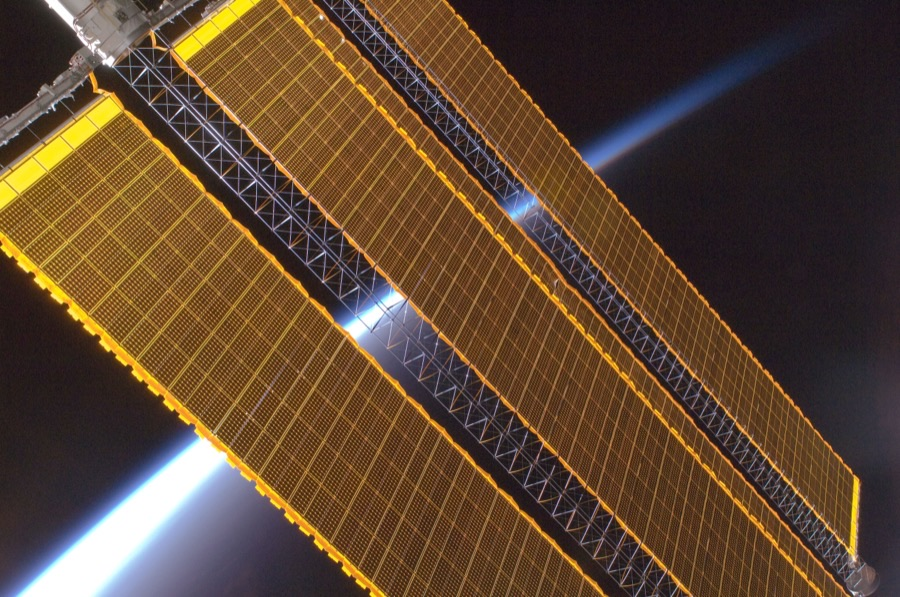

Solar Power Budget
How much electricity the solar arrays generate — the upstream constraint on every system the crew can run.

101 · zoom in
A space station runs on solar electricity. The arrays are the largest single feature on the outside (the ISS arrays span 109 m wing-to-wing — bigger than a football field) because everything else depends on the watts they pull from sunlight: life support, communications, scientific instruments, the crew's exercise machine, the toilet's air-flow fan.
ISS peaks at roughly 120 kW from eight 35 m × 12 m arrays (recently augmented by six smaller iROSA roll-out arrays). Of that, about 75-90 kW reaches the actual loads after losses — battery storage during night passes, charge controllers, voltage regulation. Tiangong runs lighter at about 27 kW peak — fewer crew, fewer experiments, simpler thermal load.
Power dictates ambition. Want to run a centrifuge biology experiment? Plug it in — it'll cost 1.5 kW. Want to add ten more racks of payloads? You need a power budget, and either you grow the array (expensive — new mission) or you load-shed something else.
Solar power budget = peak generated power × duty cycle (sunlit fraction of orbit) × downstream efficiency (battery + regulator losses). For LEO stations the duty cycle is about 0.6 — roughly 35 minutes sunlit out of every 92-minute orbit.
ISS solar arrays: 8 main IEA wings (4× P3/P4, P6 + 4× S3/S4, S6) at ~120 kW peak BOL, derated to ~84 kW EOL at 15 years. iROSA augments each main wing with an iROSA roll-out array at the inboard end, adding ~20 kW peak each. As of 2025: ~215 kW peak gross, ~120 kW after duty cycle and storage losses.
Tiangong solar arrays: 4 wings on Tianhe (2 retractable each side) plus 4 large wings on Wentian and Mengtian. Total ~30 kW BOL × duty cycle = ~18 kW continuous, with 27 kW peak during sunlit pass.
Battery storage: ISS uses lithium-ion battery ORUs (orbital replacement units) at ~50 kWh capacity per pair. Each battery covers one main array's night-side load. Tiangong uses similar Li-ion banks, sized for the smaller load.
Mir, by contrast, peaked at ~30 kW from 1500 m² of array — comparable on a per-volume basis to Tiangong but with older nickel-cadmium battery storage that needed deeper rebuilds over its 15-year life.
